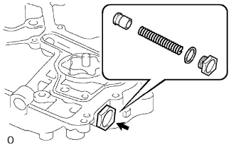

МАСЛЯНЫЙ НАСОС (для моделей без DPF) > РАЗБОРКА |
| 1. СНИМИТЕ ВЕДОМУЮ ШЕСТЕРНЮ |
| 2. СНИМИТЕ ПЕРЕПУСКНОЙ КЛАПАН МАСЛЯНОГО НАСОСА |
|  |
Извлеките пробку, прокладку, пружину и перепускной клапан из картера газораспределительного механизма.
| 3. СНИМИТЕ РЕЗЬБОВУЮ ЗАГЛУШКУ |
Снимите резьбовую заглушку и прокладку.